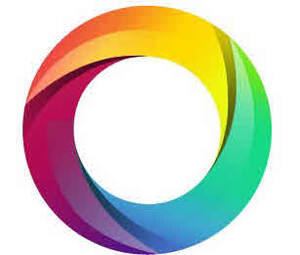

Trade Mark Journal No.2026/007 13 February 2026
UK00004331471 28 January 2026 (9,42,44)

- Class 9
- Software for remote diagnostics; Software for diagnostics and troubleshooting; Utility programs for performing computer system diagnostics; Diagnostic apparatus, not for medical purposes; Diagnostic apparatus for research laboratory use; Ultrasonic diagnostic apparatus for laboratory use; Customer relation management [CRM] software; Reporting software; Computer software relating to the medical field; Software as a medical device [SaMD], downloadable; Computer software for use in medical decision support systems; Virtual reality software for medical teaching; Medical training simulators; Apparatus and instruments for medical research; X-ray films, exposed; Software for X-ray tomography; X-ray security screening machines; Pre-recorded DVDs; Artificial intelligence software; Artificial intelligence software for analysis; Artificial intelligence software for healthcare; Databases; Data sets, recorded or downloadable; Electronic databases recorded on computer media; Workflow software; Workflow applications; Workflow management system software; Data processing programs; Data processing software; Computer programmes for data processing; Workforce management software; Computer networks; Application software; Downloadable computer software; Collaboration software platforms [software]; Collaboration management software platforms; Computer software for application and database integration; Computer software to enable the searching of data; Data and file management and database software; Document automation software; Downloadable translation software; Information retrieval software; Artificial intelligence and machine learning software; Downloadable computer software for collecting, analyzing and organizing data in the field of deep learning; Downloadable computer software for generating images from text using artificial intelligence; Virtual assistant software; computer software for generating medico-legal reports; Computer software for rehabilitation, physiotherapy and medical assessment; capability assessment software; Application software, which involves systems for rehabilitation, physiotherapy and medical assessment; Mobile device application software for rehabilitation, physiotherapy and medical assessment; Computer software for the recording of movement exercises and assessment; Downloadable computer software for providing behavioural therapy, cognitive behavioural therapy (cbt), Eye Movement Desensitisation and Reprocessing and psychological support for individuals; Software for connecting users with therapists and support groups; Artificial intelligence-based software for analysing user behaviour and providing personalised treatment recommendations; parts and fittings for all the aforesaid goods.
- Class 42
- Scientific and technological services and research and design relating thereto; Industrial analysis, industrial research and industrial design services; Quality control and authentication services; Design and development of computer hardware and software; Computer aided diagnostic testing services; Research and development in the field of diagnostic preparations; Design and development of medical diagnostic apparatus; Computer programming services for commercial analysis and reporting; Expert reporting services relating to technology; Design of computer machine and computer software for commercial analysis and reporting; Computer programming in the medical field; Writing of computer programs for medical applications; Design and development of computer software for use with medical technology; Electronic storage of medical records; Medical research; Medical research services; Scientific investigations for medical purposes; Biological research, clinical research and medical research; Urine testing for scientific research purposes; Providing scientific information in the field of medical disorders and their treatment; Research in the field of artificial intelligence; Technology consultation in the field of artificial intelligence; Research in the field of artificial intelligence technology; Providing artificial intelligence computer programs on data networks; Platforms for artificial intelligence as software as a service [SaaS]; Artificial intelligence as a service [AIaaS]; Quality assurance consultancy; Quality assurance services; Process monitoring for quality assurance; Design and development of software in the field of mobile applications; Information technology consultancy; Information technology support services; Information technology [IT] support services [troubleshooting of software]; Services of software development, which involves systems for the analysis of biometric data; research and electronic data processing services related to rehabilitation, physiotherapy and medical assessment; Software services allowing to carry out recorded physical exercises and assessment; Software services in the field of rehabilitation, physiotherapy and assessment; Design of computer and mobile device application software, application software and application programming interface for rehabilitation, physiotherapy and medical assessment; Platform as a service [paas]; Platform as a service, namely, hosting platforms for use by others in the field of rehabilitation, physiotherapy and medical assessment; Software as a service [saas]; Software as a service, namely, hosting software for use by others in the field of rehabilitation, physiotherapy and medical assessment; Providing temporary use of on-line non-downloadable computer software for use in the field of rehabilitation, physiotherapy and medical assessment; information, consultancy and advisory services relating to all the aforesaid services.
- Class 44
- Medical services; Veterinary services; Hygienic and beauty care for human beings or animals; Agriculture, aquaculture, horticulture and forestry services; Medical tele-reporting [medical services]; Medical screening; Providing mental health rehabilitation facilities; Medical evaluation services for patients receiving rehabilitation for purposes of guiding treatment and assessing effectiveness; Medical diagnostic services; Medical testing for diagnostic and treatment purposes; Medical analysis services for diagnostic and treatment purposes provided by medical laboratories; Surgical diagnostic services; Rental of ultrasonic diagnostic apparatus; Tele-reporting (medical services); Medical consultations; Medical counselling; Medical information; Medical clinics; Medical testing; Medical examinations; Medical advisory services; Medical information services; Medical clinic services; Medical assistance services; Medical examination services; Provision of medical information; Hiring of medical instruments; Medical examination of individuals; Medical health assessment services; Medical information retrieval services; Conducting of medical examinations; Compilation of medical reports; Remote monitoring of medical data for medical diagnosis and treatment; Medical assistance consultancy provided by doctors and other specialized medical personnel; Providing medical support in the monitoring of patients receiving medical treatments; Advisory services relating to medical services; Advisory services relating to medical problems; Providing information relating to medical services; Preparation of reports relating to medical matters; Services for the provision of medical facilities; Services for the preparation of medical reports; Medical analysis services relating to the treatment of persons provided by a medical laboratory; Individual medical counseling services provided to patients; Services for the provision of medical care information; Drug, alcohol and DNA screening for medical purposes; Consultancy and information services relating to medical products; Medical treatment services provided by clinics and hospitals; Advisory services relating to medical apparatus and instruments; Medical care and analysis services relating to patient treatment; Medical examination of individuals (Provision of reports relating to the -); Medical testing services relating to the diagnosis and treatment of disease; Medical consultancy for selecting appropriate wheelchairs, commodes, invalid hoists, walking frames and beds; X-ray examinations for medical purposes; X-ray imaging for medical purposes; Rental of medical x-ray apparatus; Medical ultrasound imaging services; Ultrasound services for medical purposes; Services for the testing of urine; Physiotherapy services; Physical rehabilitation; Therapeutic treatment of the body; Laboratory analysis services relating to the treatment of persons; Urine analysis being medical analysis services for diagnostic and treatment purposes provided by medical laboratories; Issuing of medical reports; Preparation and provision of medico-legal reports; medical based evidence in connection with personal injury legal proceedings; Cognitive behavioural therapy (CBT); Eye Movement Desensitisation and Reprocessing; Medical health assessment services; Development of individual physical rehabilitation programmes; information, consultancy and advisory services relating to all the aforesaid services.
Kuro Health Limited
Representative: Stobbs